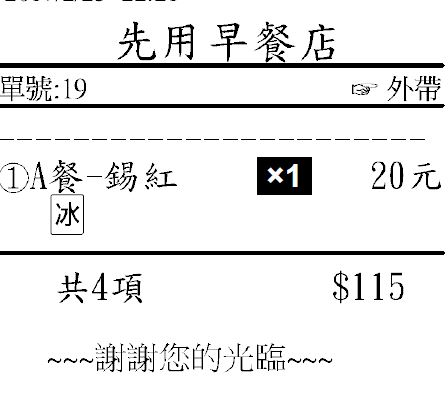

回問題列表 測試了一下...單子會顯示 Q966 未分類 addison4869 Feb 23, 2017 這樣看起來怪怪的....有辦法讓他真正合併嗎? 3 個回答 回答 #968 advpos Feb 23, 2017 您好 以您舉的例子來看,可以將金額全部放在選擇品項 如 {主選單} 套餐類 A號餐[模式:套餐] 雞塊薯條[[不印] 吐司[不印] 套餐飲料 [品項名稱]A號餐-紅茶[$115];A號餐-奶茶[$115];A號餐-綠茶[$115]; 中杯;大杯[$5][顏色:16737843]; 冰[顏色:16763904]; 溫[顏色:65535]; 熱 [顏色:255]; 回答 #971 addison4869 Feb 24, 2017 我實際操作 如果要加起司要在 吐司那按加起司跟A號餐-紅茶按加起司才能實現 這樣就會顯得麻煩請問我要怎麼修改才可以比較方便簡單 的 讓單子顯示A號餐-紅茶 備註加起司 又要完成備餐那 吐司加起司呢?? 回答 #972 advpos Feb 24, 2017 很抱歉 目前只能這樣 沒有其他更好的方式
回答 #968 advpos Feb 23, 2017 您好 以您舉的例子來看,可以將金額全部放在選擇品項 如 {主選單} 套餐類 A號餐[模式:套餐] 雞塊薯條[[不印] 吐司[不印] 套餐飲料 [品項名稱]A號餐-紅茶[$115];A號餐-奶茶[$115];A號餐-綠茶[$115]; 中杯;大杯[$5][顏色:16737843]; 冰[顏色:16763904]; 溫[顏色:65535]; 熱 [顏色:255];
回答 #971 addison4869 Feb 24, 2017 我實際操作 如果要加起司要在 吐司那按加起司跟A號餐-紅茶按加起司才能實現 這樣就會顯得麻煩請問我要怎麼修改才可以比較方便簡單 的 讓單子顯示A號餐-紅茶 備註加起司 又要完成備餐那 吐司加起司呢??